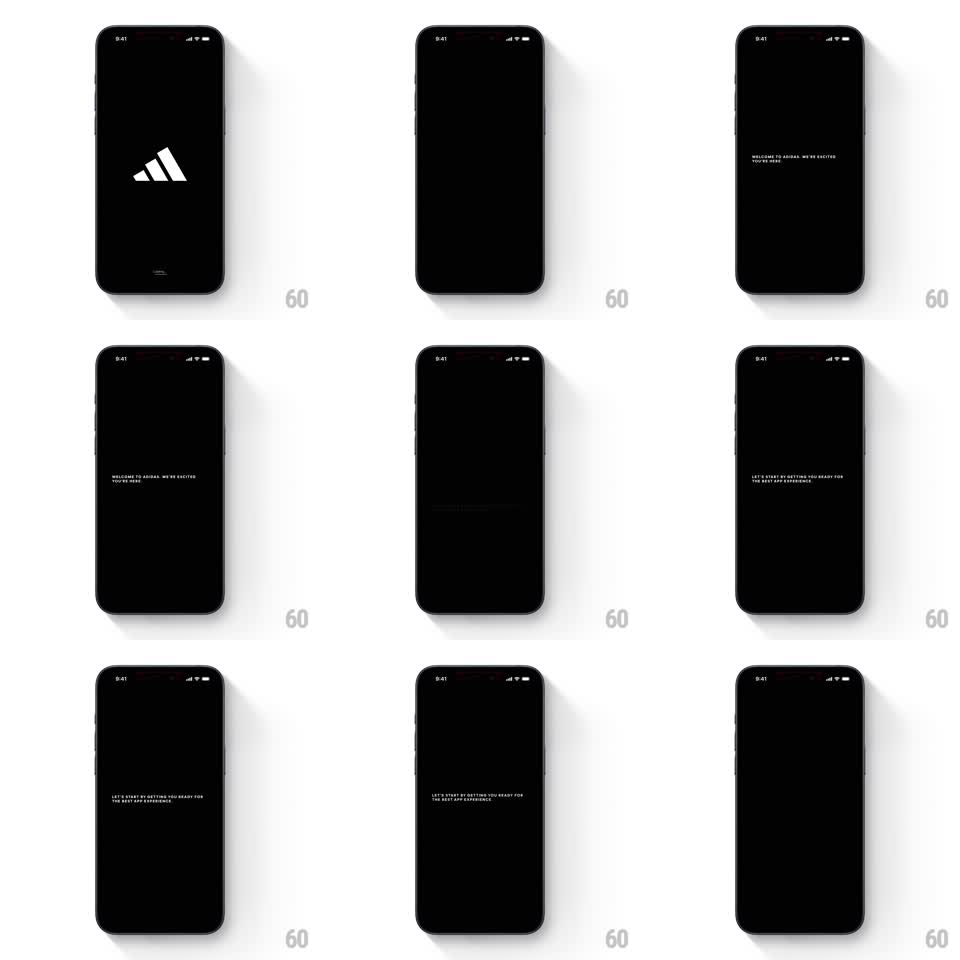

Media
Frame-by-frame

Rebuild this animation 1:1: Adidas' splash-to-intro sequence - the white performance logo sits on black, then a series of short uppercase messages fade through one at a time ("WELCOME TO ADIDAS. WE'RE EXCITED YOU'RE HERE", "LET'S START BY GETTING YOU READY FOR THE BEST APP EXPERIENCE").

Rebuild this animation 1:1: Adidas' splash-to-intro sequence - the white performance logo sits on black, then a series of short uppercase messages fade through one at a time ("WELCOME TO ADIDAS. WE'RE EXCITED YOU'RE HERE", "LET'S START BY GETTING YOU READY FOR THE BEST APP EXPERIENCE").
## Integration
Integration: stack-agnostic spec - springs given as stiffness/damping, timed motions as duration + curve; map every value to your framework and animation library of choice.
## Scene
Adidas intro, pure black: the white three-bar logo centered (splash), then small white uppercase messages centered in the same spot - message 1 "WELCOME TO ADIDAS. WE'RE EXCITED YOU'RE HERE", message 2 "LET'S START BY GETTING YOU READY FOR THE BEST APP EXPERIENCE". A tiny wordmark sits at the bottom throughout.
## Motion spec
Pattern: timed sequential message crossfades after a logo hold.
- Splash: the logo fades in (400ms) and holds 1.2s at full opacity.
- The logo fades out (350ms) and message 1 fades in (500ms) at the same center position - a clean relay, never both visible mid-fade beyond a 100ms overlap.
- Message 1 holds ~1.8s, then crossfades to message 2 (out 400ms / in 500ms with the same small overlap).
- After the last message holds (~1.8s), the whole layer fades to the next screen (400ms).
- Optional interactivity: a horizontal swipe during the sequence skips to the next message immediately (current exits in 250ms).
## Calibration
- Type is small, wide-tracked uppercase, centered - the restraint is the brand.
- Exactly one element on screen at a time; the bottom wordmark is the only constant.
## Reduced motion
Same crossfades - the sequence is already motion-minimal.
## Don't miss
- Messages are centered both axes; no rise or drift - pure opacity choreography.
- The logo and messages share the same optical center so the handoff feels stationary.